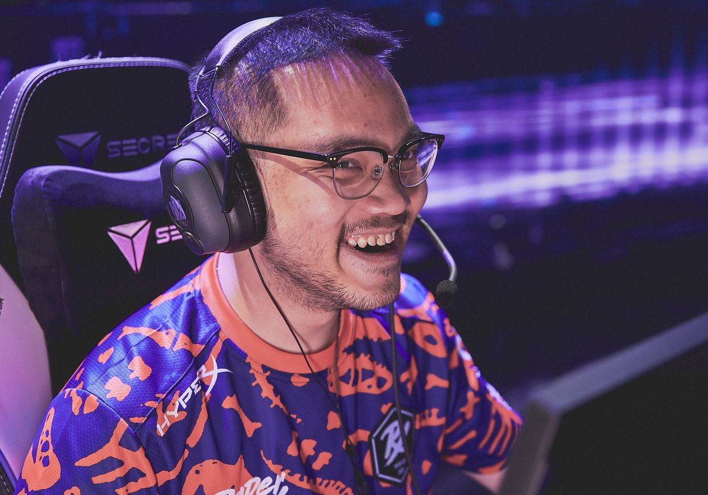
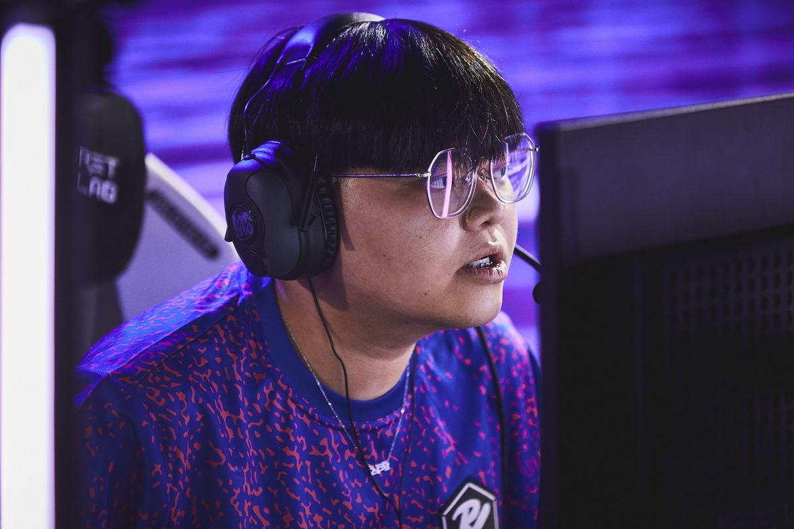
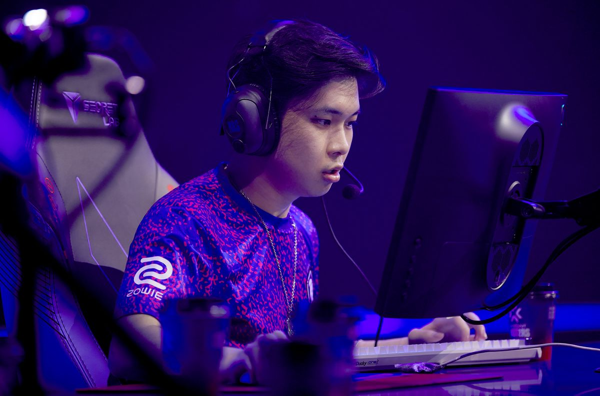
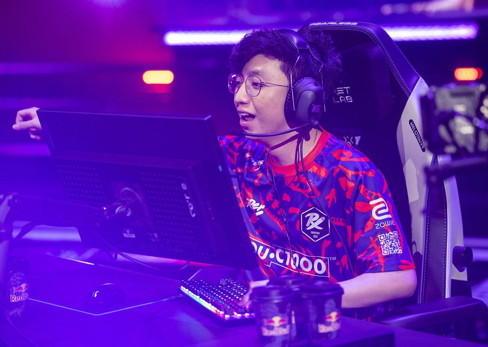
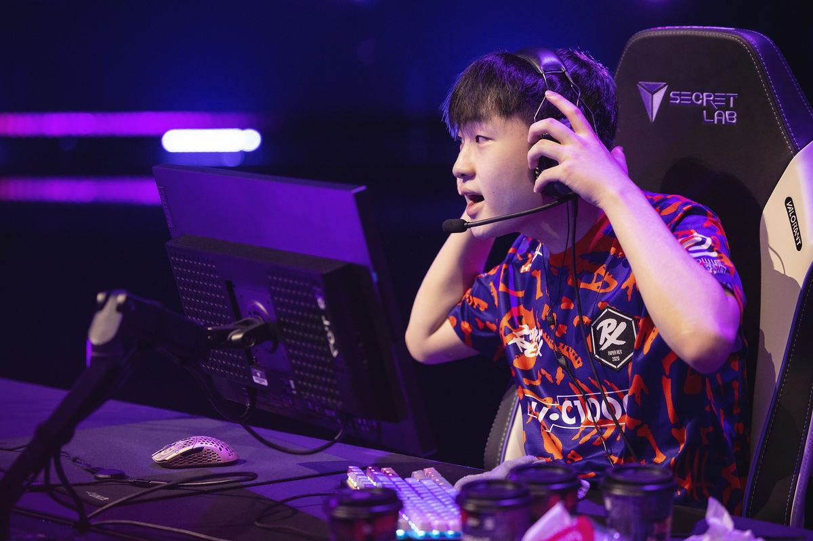
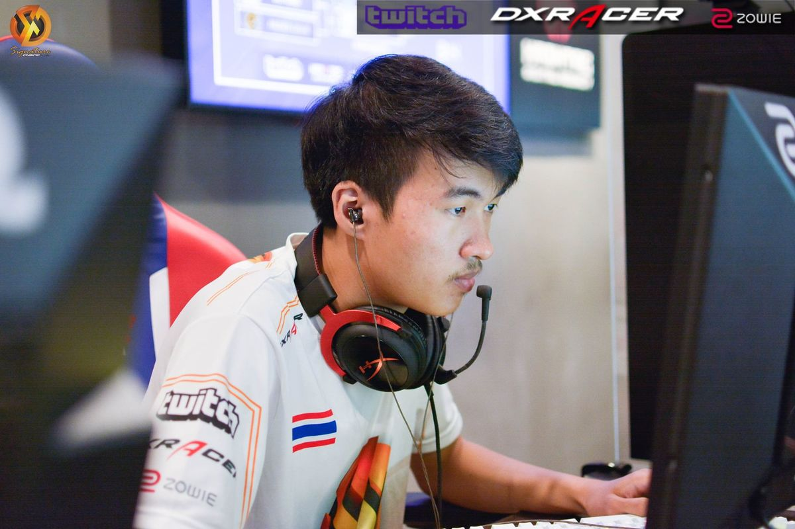

| Foto | Biodata | Role |
|  | Benedict "Benkai" Tan (lahir 10 November 1996) adalah pemain Singapura yang saat ini bermain untuk Paper Rex. Dia adalah mantan pemain Counter-Strike: Global Offensive. | Sentinel/Initiator |
| Foto | Biodata | Role |
|  | Khalish "d4v41" Rusyaidee (lahir 14 Oktober 1998) adalah pemain Malaysia yang saat ini bermain untuk Paper Rex. Dia adalah mantan pemain Counter-Strike: Global Offensive. | Sentinel/Initiator |
| Foto | Biodata | Role |
|  | Aaron "mindfreak" Leonhart (lahir 4 Oktober 1999) adalah pemain Indonesia yang saat ini bermain untuk Paper Rex. Dia adalah mantan pemain Counter-Strike: Global Offensive | Controler |
| Foto | Biodata | Role |
|  | Jason "f0rsakeN" Susanto (lahir 25 Maret 2004) adalah pemain Indonesia yang saat ini bermain untuk Paper Rex. Dia adalah mantan pemain Counter-Strike: Global Offensive. |
Duelist |
| Foto | Biodata | Role |
|  | Jing Jie "Jinggg" Wang (lahir 29 Juli 2003) adalah pemain Singapura yang saat ini bermain untuk Paper Rex. | Duelist |
| Foto | Biodata | Role |
|  | Patiphan "CigaretteS" Posri adalah pemain Thailand yang saat ini bermain untuk Paper Rex. Dia adalah mantan pemain Counter-Strike: Global Offensive dan PUBG yang dikenal bermain di Signature Gaming dan Made in Thailand. | Initiator |